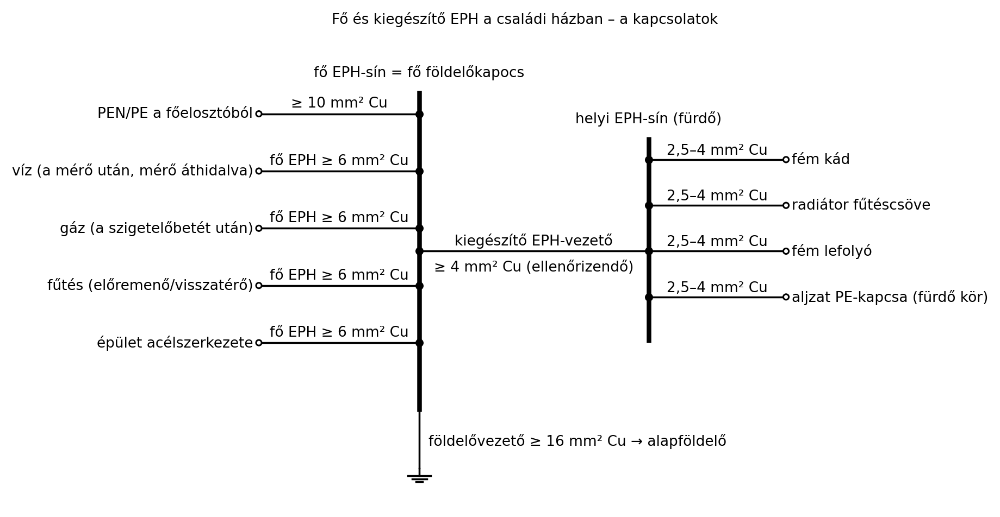
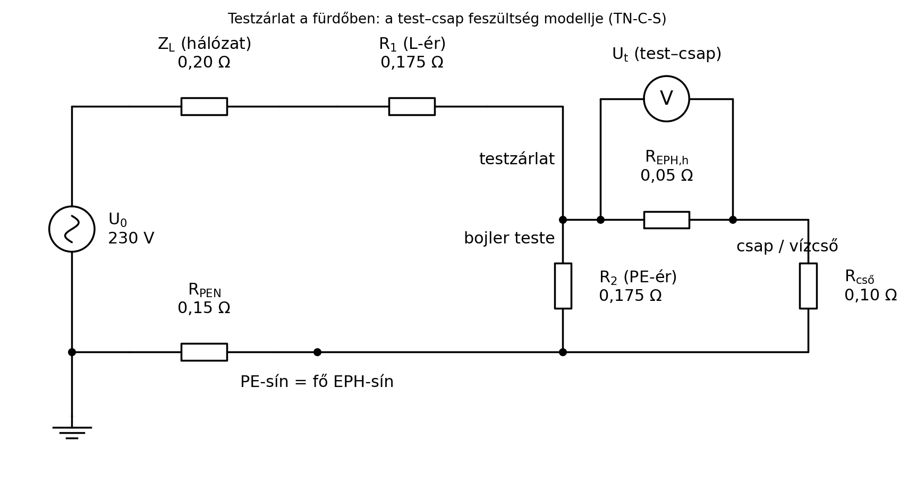

Képzelj el egy családi házat, ahol a fürdőszobában a tulajdonos enyhe bizsergést érez, amikor a kádban ülve megfogja a fém csaptelepet, vagy amikor a fém radiátorhoz és a mosógép fémtestéhez ér egyszerre. A szerelőként a helyszínre érkezve először arra gyanakszol, hogy a készülék szigetelése romlott el, vagy az áram-védőkapcsoló (RCD) rossz.
A műszeres vizsgálat azonban gyakran ennél tragikusabb hibát mutat: nem a csaptelep vagy a készülék hibás, hanem a házban nincs kialakítva, vagy hibás a fő egyenpotenciálra hozás (EPH). Emiatt a betonalapban, a fémcsövekben és a védővezetőben azonos hiba esetén (például egy szigetelési hiba következtében) eltérő feszültség jelenik meg. Ez a potenciálkülönbség az, ami áramot hajt át az emberi testen, ha az két, különböző potenciálon lévő fémrészt egyszerre érint meg.
Az EPH célja, hogy ezeket a vezetőképes részeket és a védővezetőt szándékosan, kis ellenállású vezetékkel összekösse, ezzel gyakorlatilag megszüntetve a közöttük kialakuló feszültséget.
Az alábbi kapcsolati rajz azt mutatja, mi mihez csatlakozik egy családi ház EPH-rendszerében: a fő EPH-sín (a fő földelőkapocs) az a csomópont, amelybe a védővezető, a földelővezető és a házba belépő fémes rendszerek futnak, a fürdőszoba helyi EPH-sínje pedig ugyanehhez a rendszerhez kapcsolódik. Minden vonal egy zöld-sárga vezető; a feliratok a tanulási keresztmetszeteket adják.

A rajz nem szerelési rajz (a bekötések helyét a fő EPH-sín ábrája és a fürdőszobai falnézet mutatja lent), de a logikát jól mutatja: a földelő nem a fő EPH „alatt” van, hanem ugyanabba a csomópontba fut, és minden fémrésznek – legyen az egy vízcső vagy egy kád – ugyanarra a közös csomópontra kell csatlakoznia, közvetlenül vagy a helyi sínen át. Ellenőrzésként számold meg: hány vezető fut a fő sínre, és melyik az, amelyik nélkül a sín „lebegne” a föld potenciáljához képest?
Definíció. Egyenpotenciálra hozás (EPH): olyan védelmi intézkedés, amelynek során a villamos berendezés idegen vezetőképes részeit (fém csővezetékek, épület fémszerkezetei, fém vázak, légtechnikai csatornák) és a védővezetőt egymással és a földeléssel kis ellenállású vezetővel kötik össze a potenciálkülönbségek kialakulásának megakadályozására.
A fogalom a munkavédelem alapjára vezethető vissza: az áramütést nem elsősorban az abszolút feszültség, hanem az emberi testen áthaladó érintési feszültség okozza. Ha minden kézzel megérinthető fémrész ugyanakkora feszültségen van, akkor nincs áramút, így a hiba során sem lép fel áram a testben.
Definíció. Fő EPH: a létesítmény szintjén, általában a főelosztóban vagy a közműcsatlakozások belépési pontján kiépített összekötés. Itt találkoznak a védővezető, a földelővezető és a legnagyobb fémes közművek, szerkezetek.
Definíció. Kiegészítő EPH: egy adott helyiségre vagy zónára (például fürdőszoba, zuhanyzó, úszómedence gépészeti tere) kiterjedő, további, finomabb kiegyenlítés. Célja, hogy ezekben a fokozott áramütésveszélyes környezetekben még abban az esetben se alakulhasson ki érintési feszültség, ha a fő védelmi intézkedés (például a csőhálózat bekötése) messze van, vagy a csövek szigetelőbetétesek.
Törvény. Az EPH működése az Ohm-törvényen alapul: ha két pont között nagyon kicsi az ellenállás, akkor a két pont között mért feszültség is nagyon kicsi. Az EPH vezető kis ellenállása garantálja, hogy a hibaáram hatására sem alakul ki veszélyes potenciálkülönbség.

1. eset – nincs EPH, a vízcső távoli földpotenciálon (az és az ág hiányzik):
A test a távoli földhöz (és így a csaphoz) képest az és a PEN-szakasz feszültségesésével emelkedik meg (a ház földelőjének hatását elhanyagolva): .
2. eset – fő EPH van (a vízcső a fő EPH-sínre kötve, az ág megvan, de a cső ezen az ágon nem visz áramot): a csap a PE-sín potenciálján van, a test és a csap között csak az esése marad: .
3. eset – kiegészítő EPH is van ( a bojler teste és a csőhálózat között helyben, a cső a fő EPH-ig ): a hibaáram két párhuzamos úton tér vissza a PE-sínre – az -n és az ágon:
Következtetés. Ugyanannál a hibánál a test és a csap közötti feszültség EPH nélkül kb. 107 V, fő EPH-val kb. 57,5 V, kiegészítő EPH-val kb. 10 V. Az EPH a lekapcsolásig fennálló érintési feszültséget csökkenti; a lekapcsolást nem helyettesíti: a hibát továbbra is a kismegszakítónak (és a FI-nek) kell megszüntetnie az előírt időn belül. (Üzemmeleg, 70 °C-os vezetővel , és a 2. eset kb. 63 V-ra nő – a kép nem változik. A számok tanulási példa, saját számítás.)
Fő EPH sín (köznyelvben EPH-sín vagy EPH-csomópont; angolul main earthing terminal, MET) egy olyan réz vagy sárgaréz sín, amely a fővezeték, illetve a fő PE/PEN csatlakozás közelében van. Ide kötnek be minden olyan idegen vezetőképes részt, amely a hálózati feszültséggel összeköttetésbe kerülhet. A sín jellemzően a főelosztó szekrényben, vagy közvetlenül mellette, egy külön kötődobozban van.
A szerelés során a fő EPH sínre kell kötni:
A feszültségre és áramra vonatkozó szabály. Az EPH vezetők méretét úgy kell megválasztani, hogy a hibafeszültség ne haladja meg az emberre veszélyes értéket. Az EPH vezetők ellenállása legyen elég kicsi ahhoz, hogy a rajta folyó hibaáram () hatására az U feszültségesés elhanyagolható maradjon.
Szabvány. A fő EPH vezető keresztmetszetére vonatkozóan az MSZ HD 60364 sorozat (különös tekintettel a földelésre és EPH-ra vonatkozó rész – MSZ HD 60364-5-54) ad előírást. Általánosan elfogadott iparági gyakorlat szerint a fő EPH vezető réz esetén legalább a berendezés legnagyobb védővezetője keresztmetszetének fele, de legalább 6 mm² Cu; 25 mm² Cu-nál nagyobbat nem kell választani (felső érték, nem tilalom). (Ellenőrizendő: aktuális szabványkiadás és a hálózati engedélyes előírása a pontos minimális méretekre.)
A jelölés mindig sárga-zöld (a hazai szabvány szerint), de ahol ez nem lehetséges, a vezetéket feliratozni kell. A csatlakozási pontoknak olyanoknak kell lenniük, hogy csak szerszámmal bonthatók. A csavarokat, sorkapcsokat úgy kell megválasztani, hogy a rázkódás és a hőtágulás ne lazítsa meg őket.
Az alábbi ábra egy családi ház fő EPH-sínjét mutatja a bekötött vezetőkkel, a fenti felsorolás sorrendjében számozva: az 1 főelosztó PE-sínjéről jön a 2 fő védővezető, lefelé a 3 földelővezető az alapföldelőhöz fut, felfelé a 4 víz-, az 5 gáz- és a 6 fűtéscsőhöz vezet egy-egy zöld-sárga vezető, jobbra a 7 épület-fémszerkezet és a 8 antenna-/távközlési védőcsatlakozás kapcsolódik. A 9 sín rézből készül, a 10 címkék minden vezetőnél megmondják, mit köt be.
Az ábrán figyeld meg, hogy a vízcső bilincse a vízmérő épület felőli oldalán van, és a mérőt áthidaló vezeték köti át, a gázcső bilincse pedig a szigetelőbetét belső oldalán (a szolgáltatói előírás szerint). Átvételkor a legtöbb hiba egy hiányzó vezető: ha bármelyik szám „üres”, a sín nem tölti be a szerepét. A HTML-kiadásban a részekre mutatva megjelenik a feladatuk.
A házakban leggyakrabban előforduló idegen vezetőképes részek a víz-, gáz- és fűtéscsövek. Az EPH bekötésük nem egyenlő a földeléssel! A csövek nem használhatók földelőként, de be kell őket kötni az EPH-ba, hogy ne legyen rajtuk potenciálkülönbség.
A víz- és fűtéscsövek bekötése:
Megjegyzés: idegen vezetőképes rész-e? A helyszínen két lépésben döntsd el:
| Fémrész | Csatlakozás | Mért R a PE felé (szemléltető) | Döntés |
|---|---|---|---|
| fém kád fém lefolyóval, öntöttvas ejtőcsőhöz | fém | 0,8 Ω | bekötendő |
| fém csaptelep PEX csövön | műanyag | > 1 MΩ | nem kötelező |
| radiátor rézcsöves fűtéssel | fém | 0,2 Ω | bekötendő |
| acél zuhanytálca műanyag szifonnal, csempén | nincs fém kapcsolat | > 1 MΩ | nem kötelező |
A döntés gyakorlását a 7–10. feladat adja.
A gázcső különleges helyzete. A gázvezetékeket be kell kötni az EPH-ba, de a gázszolgáltatók gyakran szigetelőbetétet írnak elő a közműcsatlakozás és a belső hálózat közé, hogy megakadályozzák a kóboráramok bejutását a közcélú gázhálózatba (katódvédelem). A belső gázhálózatot a fő EPH sínre, a bejövő gázcsövet pedig a szigetelőbetéten keresztül vagy a szolgáltatói előírás szerint kell kezelni. (Ellenőrizendő: a helyi gázszolgáltató aktuális előírása.)
Figyelem. A vízmérő melletti áthidaló vezeték azt szolgálja, hogy a mérőcsere során se szakadjon meg a csőhálózat EPH-kapcsolata; az EPH-vezetőt ezért a mérő után kötjük a csőre, a mérőt pedig áthidaljuk.
A csőre EPH-csőbilincs kerül. Az alábbi ábra (a) részén a felépítése látható: az 1 csupaszra tisztított csőfelületre feszül a 2 szorítószalag, amelyet a 3 szorítócsavar húz meg; a 4 csatlakozókapocsba kábelsaruval kerül az 5 zöld-sárga EPH-vezető, a 6 címke jelzi a rendeltetését. Az alsó sor a beépítési helyet hasonlítja össze: (b) helyes – a mérő után, áthidalással; (c) hibás – festett felületre szorítva; (d) hibás – áthidalás nélkül, a mérő utcai oldalán.
A (c) hiba mérésre derül ki: a festékréteg vagy rozsda miatt a bilincs és a cső között nagy az átmeneti ellenállás. A (d) esetben a vízmérő cseréjekor az egész belső csőhálózat leválik az EPH-ról. A bilincs méretét a csőátmérőhöz választjuk; a csőbe fúrni tilos. A HTML-kiadásban a négy nézet egyenként, magyarázattal jeleníthető meg.
A fürdőszoba a legveszélyesebb helyiség a lakásban: az ember nedves, a bőr ellenállása lecsökken, és a földelt fémrészek (kád, csap, radiátor) nagy felületen érintkeznek a testtel. Ezért itt kiegészítő EPH kialakítása szükséges lehet; a kötelezőség és az elhagyhatóság feltételeit az MSZ HD 60364-7-701 adja (ellenőrizendő: aktuális kiadás).
Szabvány. A fürdőszoba és zuhanyzó zónáira vonatkozó előírásokat a hibavédelemmel foglalkozó szabványrész (MSZ HD 60364-7-701) tartalmazza. A kiegészítő EPH-ba az idegen vezetőképes részeket kell bekötni; a műanyag csövön lévő, a földtől elszigetelt fém csaptelep nem idegen vezetőképes rész. A kiegészítő EPH kötelezősége és elhagyhatósága feltételekhez kötött (ellenőrizendő: MSZ HD 60364-7-701 aktuális kiadás).
Mit kell összekötni a kiegészítő EPH-ban?
A kiegészítő EPH vezetőket egy helyi sínre (kis EPH sín) kell kötni, és ezt összekötni a fő EPH rendszerrel, vagy közvetlenül a helyi PE-kkel. A csatlakozások itt is zöld-sárga jelölésű, jellemzően 2,5–4 mm² keresztmetszetű réz vezetékek legyenek. (Ellenőrizendő: a zóna besorolásától függő minimális méret a hatályos szabványban.)
Összefüggés. A kiegészítő EPH hatásosságának feltétele (ellenőrizendő: MSZ HD 60364-4-41). Az egyidejűleg érinthető testek és idegen vezetőképes részek közötti ellenállás:
(száraz, normál helyen, váltakozó feszültségen; ahol 25 V-os határ érvényes, ott ). Itt a kör védőeszközének kioldási árama (kismegszakítónál a pillanatkioldó felső határa, mint az Automatikus lekapcsolás: TN és TT, kioldási feltétel alfejezetben), FI-vel védett körnél . Indoklás: a hibaáram az összekötő vezetőn átfolyva feszültséget hoz létre a két érinthető rész között, és ennek a lekapcsolásig a megengedett érintési feszültség alatt kell maradnia.
A helyi sínt úgy helyezzük el, hogy ellenőrzéskor hozzáférhető maradjon (például a kád melletti ellenőrzőnyílásnál), mert a mérés minden bekötött fémrész és a sín között történik. Ha a csaptelep műanyag csövön ül és a földtől elszigetelt, a 2 vezető elmarad – ez nem hiba. A HTML-kiadásban az EPH-vezetők rétege ki-be kapcsolható, a részekre mutatva megjelenik a magyarázat.
Egy panellakásban a tulajdonos arra panaszkodott, hogy a fürdőszobában, a kádban ülve, a fém csaptelepet megfogva enyhe „csípést” érez, ha a zuhanyrózsa fém tartóját is megérinti. A lakásban a hálózati rendszer TN-C volt (a felújításkor TN-C-S-re kell alakítani, és FI-t kell beépíteni, lásd Hálózati rendszerek: TN-C, TN-S, TN-C-S, TT, IT, Áram-védőkapcsoló (FI) és kiegészítő védelem), a fürdőszoba felújítása során azonban fém kádat és fém csaptelepet szereltek be, de a kiegészítő EPH-t nem építették ki.
A szerelő mérést végzett: a hurokimpedancia rendben volt, FI-t nem talált az elosztóban. A „csípés” oka az volt, hogy a kád és a fém csaptelep, illetve a radiátor között néhány volt feszültségkülönbség alakult ki. A további vizsgálat kimutatta, hogy a kád bekötve sehonnan sem volt a védővezetőhöz. A megoldás az volt, hogy a kád alatt egy helyi kiegészítő EPH sínt építettek ki, ahova bepótolták a kádat, a csaptelepet, a radiátort és a fürdőszoba aljzatainak PE vezetőjét. Ezt a sínt a fő EPH rendszerhez kötötték. A „csípés” megszűnt, és a mérés is igazolta, hogy a fémrészek között a feszültség gyakorlatilag 0 V. A szerelő a feszültségkülönbség forrását is megkereste: szigetelésmérés a fürdőszobai készülékeken (feszültségmentesítés után, az öt biztonsági lépés szerint), és figyelembe vette, hogy TN-C rendszerben a PEN-en folyó üzemi áram feszültségesése is okozhat ilyen különbséget. A felújítás keretében a lakás TN-C-S-re alakítása és 30 mA-es FI beépítése is megtörtént. Tanulság: az EPH kiépítése a tünetet megszünteti, de a potenciálkülönbség forrását külön meg kell keresni, nem elfedni.
Hiba: „Az EPH nem kell, mert van FI-relé.” Javítás: Az FI-relé a hibás szivárgó áramot váltja le, de nem szünteti meg a potenciálkülönbséget. Ha a házban nincs EPH, a két fémrész közötti feszültség hibaáram nélkül is létrejöhet (például mágneses terek, csekély szigetelési szivárgás), ami a bőrön keresztül áramot hajt. Az EPH és az FI-relé egymás mellett szükséges, nem egymás helyett.
Hiba: A gázcsövet hagyományos, fém bilinccsel közvetlenül, szigetelőbetét nélkül kötik be. Javítás: A gázszolgáltatói előírás szerint gyakran szigetelőbetétet kell beépíteni a bejövő gázcső és a belső hálózat közé. A belső hálózatot a szigetelőbetét után kell az EPH-ba bekötni. A szabály ellenőrizendő a helyi szolgáltatónál, de a közvetlen, katódvédelmet veszélyeztető átkötés tipikus szerelési hiba.
Hiba: A fő EPH sínbe bekötik a védővezetőt, de a földelővezetőt nem; vagy a földelővezetőt, de a vízcsövet lefelejtik. Javítás: A fő EPH sín az a csomópont, ahol a földelés, a védőrendszer és az idegen vezetőképes részek találkoznak. Ha bármelyik hiányzik, a másik kettő nem tudja kifejteni a hatását: a sín vagy levegőben lóg, vagy nem veszi fel a föld potenciálját, vagy a fém cső marad fedetlenül.
Hiba: A csőre kötött bilincs csak a felületre van felfektetve, a rozsdás vagy festett réteg miatt az ellenállás nagy. Javítás: A cső csatlakozási pontját meg kell tisztítani, csupasz fémre kell bontani, és a bilincset úgy rögzíteni, hogy az a cső teljes kerületén szorosan illeszkedjen. A csatlakozás után az ellenállást mérni kell.
Gyakorlás: ennek az alfejezetnek a kidolgozott példái, gyakorlatai és megoldással ellátott feladatai az Összefoglaló feladatgyűjtemény villanyszerelő tanulóknak című kötet 22.2 szakaszában találhatók.
Az egyenpotenciálra hozás (EPH) nem hiba elhárítása utáni kiegészítő, hanem az áramütés elleni védelem egyik alappillére. A fő EPH sín a létesítmény belépési pontjánál gyűjti össze a földelővezetőt, a fő védővezetőt és az idegen vezetőképes részeket (víz, gáz, fűtés, fém szerkezetek). A kiegészítő EPH a veszélyes zónákban (különösen a fürdőszobában) a helyi fémrészeket is beköti a védőrendszerbe. A cél minden esetben az, hogy az ember által megérinthető fémrészek között ne alakulhasson ki veszélyes potenciálkülönbség. A helyes kialakítás nem jelentheti a túláramvédelem és az FI-relé kiváltását; a három rendszer együtt, egymást kiegészítve véd. A szerelés során kiemelt figyelmet kell fordítani a csőbilincsek tiszta fémfelületre történő rögzítésére, a megfelelő keresztmetszetű (a fő EPH-vezetőnél legalább 6 mm² réz, szükséges felső érték 25 mm²; a kiegészítő EPH-vezetőnél jellemzően 2,5–4 mm² réz, ellenőrizendő: MSZ HD 60364-5-54) zöld-sárga vezetékekre, valamint a csak szerszámmal bontható csatlakozásokra. Az EPH folytonosságát rendszeresen ellenőrizni kell: a fémrészek és a sín közötti ellenállás a gyakorlatban 0,1 Ω alatt kell, hogy legyen.
Továbbvitt eredmény. Az EPH vezető pontos keresztmetszet-méretezése a Védővezető, PEN és a keresztmetszet méretezése alfejezetben, a kész EPH rendszer folytonossági és ellenállásmérése a Mérések I.: folytonosság, szigetelési ellenállás, földelés és Szemrevételezés, működési próbák, kikapcsolt állapotú vizsgálat alfejezetekben kerül sorra. Az EPH működését a hibaáramkör és a hurokimpedancia feltételeivel az Automatikus lekapcsolás: TN és TT, kioldási feltétel tárgyalja.